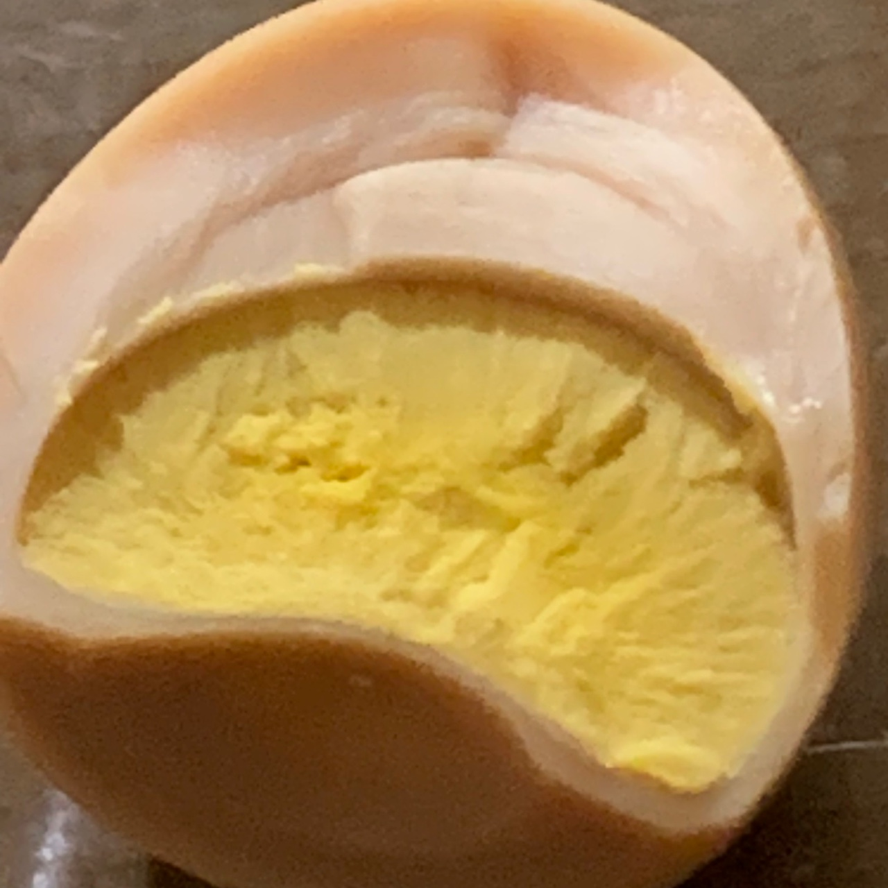
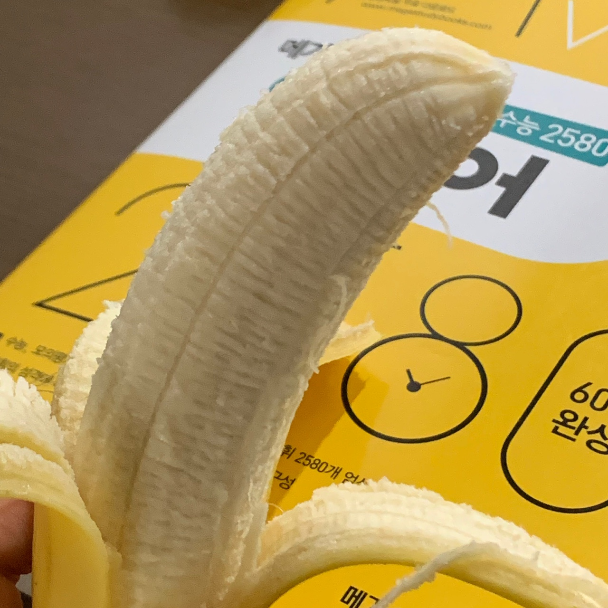

"삼겹살을 지글지글지글 옆에도 버섯도 지글지글지글 깻잎에다가 살짝 뜨끈뜨끈한 밥 넣고
뜨거운 삼겹살이랑 버섯 넣고 입에 오라라랄 오물오물오물 먹고 ㅠ 다먹으면
이제 두번째 삼겹살에 버섯을 올려서 밥이랑 오뮬오물 버섯이랑 밥이랑 오물오물오물
김치도 지글지글지글 그걸 이제 밥이랑 오뇨뇬묜 아 배고파!!"
오늘 25일 채식주의자 최성은양은 자신을 식단을 채식으로 바꿔버린 성은신문사 대표 이예찬씨에게
자신의 주장을 유감없이 발언했다고 밝혔다.
오늘부로 채식 25일차인 최성은씨는 이예찬의 권유같은 억압으로 채식을 시작하게 되었다.
당시 최성으양의 입장에서는 너무 힘든 제안이었고, 왜 해야하는지 모르겠다는 입장을 밝혔지만
이예찬씨의 억압을 못 이겨 시작을 하게 되었다고 한다. 이예찬씨는 성은양의 모든걸 통제하기
시작했으며 고기는 물론 유제품까지 먹는 걸 금지시켰다.
하지만 정작 이예찬 대표 본인은 초콜릿과 라면을 먹는 삶을 즐겨 시민들의 비난을 받았지만 그에
굴하지 않고 내로남불 입장을 밝혀왔다.
최씨는 몰래 마트에 갔다 초코송이를 사오려다가 이예찬씨의 불호령이 생각나 눈물을 먹음고
사지 않았지만 이예찬대표에 내로남불 입장에 몹시 분노하여 오늘 이 같은 소신발언을 한 것으로 밝혀졌다.
현재 최성은씨는 갑작스럽게 바뀐 식습관으로 인한 정신적 충격으로 음식을 멀리하게 되었으며
그 좋아하던 과자도 한 입 먹고 그만 먹었다고 한다.
이에 음식전문가, 영양사들은 "과연 저 식단이 오래살기 위한 것인가"라는 의문과 동시에
뇌에 엄청난 스트레스로 인해 수명이 단축될거라는 망언을 하며 성은양의 소신발언에 지지하는 입장을 발표했다.
이에 화가난 이예찬대표측은 더욱 더 강력한 '금지령'을 내린다고 전쟁을 선포하였다.
다음 사진은 성은양이 이예찬대표에게 이걸 먹고 어떻게 사냐고 항의하며 보낸 사진이다.
 
-윤시연 기자-